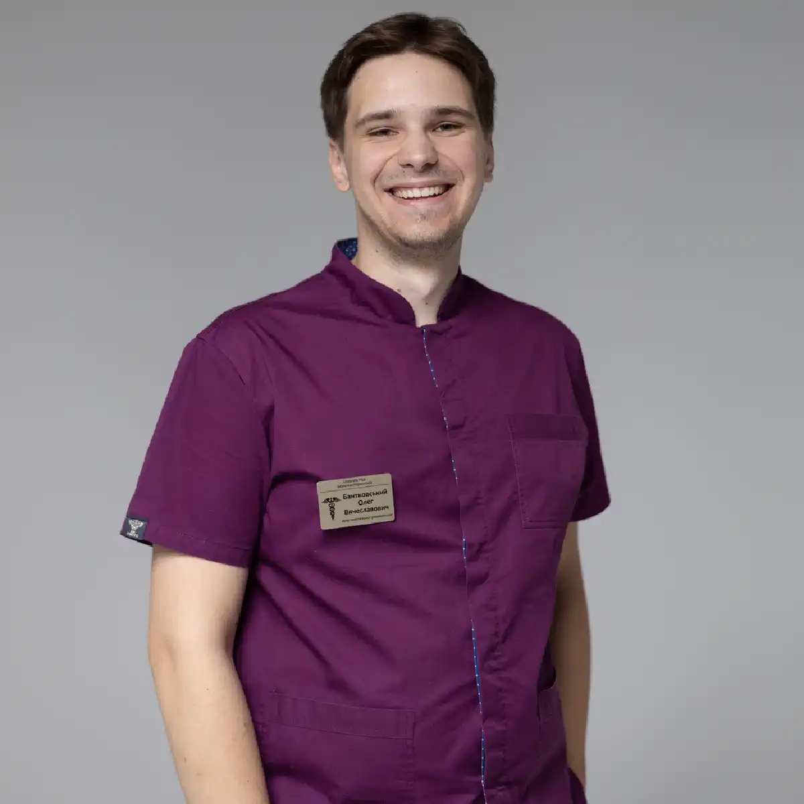

+38(068)
79 72 782
+38(068)
79 72 782Вывод из запоя в Харькове: реальные истории пациентов
Опыт пациентов и результаты лечения


Бесплатная консультация, работаем круглосуточно 24/7
Опыт пациентов и результаты лечения

Дата написания: 13 окт. 2026 г.
Последнее обновление: 13 окт. 2026 г.
Вывод из запоя в Харькове — медицинская помощь людям, которые столкнулись с последствиями длительного употребления алкоголя и не могут самостоятельно прекратить пить без ухудшения самочувствия. Наиболее распространённые жалобы включают тремор рук, тошноту, повышенное артериальное давление, учащённое сердцебиение, тревожность, потливость и бессонницу. При алкогольной зависимости резкое прекращение употребления спиртного иногда приводит к опасным осложнениям, включая судороги и алкогольный делирий. Поэтому лечение должно начинаться с оценки состояния пациента и определения безопасной тактики помощи. Вывод из запоя на дому в Харькове может рассматриваться при неосложнённом состоянии, тогда как тяжёлая абстиненция требует наблюдения и лечения в стационаре.
Практические ситуации показывают, насколько различным может быть состояние людей после употребления алкоголя. Один пациент обращается за помощью после трёх дней запоя с выраженной тошнотой и слабостью, другой — после недели употребления спиртного с бессонницей, тремором и повышенным давлением. Продолжительность запоя имеет значение, однако не является единственным критерием тяжести. Врач учитывает количество употребляемого алкоголя, предыдущие эпизоды абстиненции, наличие хронических заболеваний и общее состояние человека. Ниже рассмотрены типичные клинические ситуации, составленные для объяснения особенностей лечения. Они не являются документально подтверждёнными историями конкретных пациентов.
Основная причина обращения — ухудшение самочувствия на фоне продолжительного употребления алкоголя или попытки самостоятельно прекратить запой. Пациенты жалуются на сильную слабость, отсутствие аппетита, головную боль, тошноту, дрожание рук и невозможность нормально спать. Некоторые продолжают употреблять спиртное небольшими дозами, поскольку после прекращения приёма симптомы становятся интенсивнее. Вызов нарколога на дом в Харькове позволяет провести первичный осмотр в привычной обстановке, оценить риск осложнений и определить, допустимо ли лечение дома. При признаках тяжёлой абстиненции необходима госпитализация.
Проявления алкогольной интоксикации и синдрома отмены могут отличаться. После употребления большого количества спиртного возможны обезвоживание, головная боль, тошнота, рвота и общая слабость. При развитии алкогольной абстиненции чаще наблюдаются тремор, потливость, выраженная тревога, тахикардия, повышение давления и нарушения сна. Симптомы отмены могут появляться уже через несколько часов после уменьшения количества алкоголя. При тяжёлом течении возможны галлюцинации, судороги и спутанность сознания. Такие проявления требуют не домашней капельницы, а скорой помощи при алкогольном отравлении или других неотложных состояниях.
Типичная ситуация — мужчина среднего возраста употреблял алкоголь на протяжении трёх дней. После прекращения употребления появились слабость, тошнота, потливость и дрожание рук. Родственники решили обратиться за медицинской помощью, поскольку состояние не улучшалось. При подобных жалобах нарколог уточняет количество и время последнего употребления алкоголя, наличие предыдущих эпизодов абстиненции, сопутствующие заболевания и принимаемые препараты. После осмотра врач определяет, связаны ли симптомы преимущественно с интоксикацией, обезвоживанием или начинающейся абстиненцией. При стабильном состоянии и отсутствии факторов высокого риска может рассматриваться амбулаторный вывод из запоя в Харькове с последующим наблюдением.
После пяти дней употребления алкоголя состояние пациента может сопровождаться более выраженными нарушениями сна, тревожностью, тремором и повышением артериального давления. Например, мужчина 45 лет жалуется на учащённое сердцебиение, отсутствие аппетита и сильную слабость после прекращения употребления спиртного. В подобной ситуации врач оценивает показатели кровообращения, уровень сознания, выраженность абстиненции и риск осложнений. Лечение алкогольной абстиненции в Харькове направлено на безопасное купирование симптомов и предупреждение тяжёлого синдрома отмены. При необходимости применяются лекарственные препараты, проводится коррекция обезвоживания и электролитных нарушений. Решение о лечении на дому принимается индивидуально.
Недельный запой может сопровождаться выраженным истощением, бессонницей, тремором, потливостью и тревогой. Рассмотрим условный пример: мужчина 52 лет употреблял алкоголь семь дней, после чего попытался самостоятельно отказаться от спиртного. Через несколько часов появились сильная дрожь, сердцебиение и невозможность уснуть. Подобная клиническая картина требует оценки тяжести алкогольной абстиненции и исключения опасных осложнений. При выраженных симптомах, хронических заболеваниях или перенесённых ранее судорогах предпочтительно лечение запоя в наркологическом стационаре, где доступны непрерывное наблюдение и необходимая медицинская помощь.
Продолжительный запой увеличивает вероятность обезвоживания, нарушений питания, электролитных расстройств и осложнённой алкогольной абстиненции. После двух недель употребления спиртного пациент может испытывать выраженный тремор, учащённое сердцебиение, бессонницу, рвоту и тревожность. Особенно опасны судороги, галлюцинации и нарушения сознания. В подобных ситуациях самостоятельное лечение или попытки ограничиться одной капельницей недопустимы. Вывод из длительного запоя в Харькове должен проводиться после полноценного медицинского обследования. При высоком риске осложнений пациента госпитализируют для наблюдения, медикаментозного лечения и коррекции сопутствующих нарушений.
Нередко инициаторами обращения становятся близкие пациента. Они замечают, что человек практически не ест, плохо спит, постоянно употребляет алкоголь, жалуется на слабость или становится тревожным и раздражительным. Важно не пытаться самостоятельно назначать успокоительные, снотворные и другие препараты, особенно на фоне продолжающегося употребления спиртного. Родственникам желательно выяснить, сколько дней продолжается запой, когда пациент в последний раз употреблял алкоголь, какие заболевания у него имеются и были ли раньше судороги или делирий. Подробные рекомендации о том, что делать родственникам, если близкий человек в запое, помогают своевременно распознать опасные симптомы. При потере сознания, судорогах, затруднении дыхания или выраженной спутанности необходимо немедленно вызвать скорую помощь по номеру 103.
При обращении за помощью медицинский специалист уточняет возраст пациента, продолжительность употребления алкоголя, основные жалобы, наличие хронических заболеваний и принимаемые лекарства. Особое внимание уделяется признакам тяжёлой абстиненции, нарушениям сознания, повторной рвоте и возможным судорожным приступам. Если состояние предполагает необходимость экстренной госпитализации, домашнее лечение не должно задерживать вызов скорой помощи. При отсутствии опасных признаков может быть организован срочный вызов нарколога на дом. Дальнейшая тактика определяется после объективной оценки состояния человека.
Первичный осмотр необходим для оценки безопасности лечения. Врач измеряет артериальное давление, частоту сердечных сокращений, температуру тела, частоту дыхания и сатурацию кислорода. Оцениваются уровень сознания, выраженность тремора, степень обезвоживания и неврологические симптомы. Нарколог собирает сведения о предыдущих запоях, эпизодах тяжёлой абстиненции, судорогах и сопутствующих заболеваниях. При необходимости используются клинические шкалы оценки синдрома отмены. Консультация нарколога в Харькове позволяет определить, возможно ли лечение в домашних условиях либо пациент нуждается в стационаре.
Перед назначением препаратов важно оценить работу сердечно-сосудистой и дыхательной систем, неврологическое состояние, признаки обезвоживания и вероятность метаболических нарушений. При наличии показаний врач рекомендует ЭКГ, определение уровня глюкозы, электролитов и другие лабораторные исследования. Особого внимания требуют пациенты с аритмиями, сердечной недостаточностью, сахарным диабетом, заболеваниями печени и почек. Наличие сопутствующих патологий влияет на выбор препаратов, объём инфузионной терапии и место проведения лечения. При обнаружении серьёзных отклонений может потребоваться лечение алкогольной интоксикации в стационаре.
Универсальной схемы выведения из запоя не существует. Два человека с одинаковой продолжительностью употребления алкоголя могут иметь совершенно разную тяжесть абстиненции. На состояние влияют возраст, количество употреблённого спиртного, длительность алкогольной зависимости, предшествующие осложнения и наличие хронических заболеваний. Врач также учитывает употребление снотворных, транквилизаторов, наркотических веществ и других препаратов. Поэтому анонимная наркологическая помощь в Харькове должна начинаться с медицинского осмотра, а не с автоматического назначения стандартной капельницы.
Капельница от алкоголя на дому в Харькове может применяться при наличии медицинских показаний, например при выраженном обезвоживании или нарушениях водно-электролитного баланса. Перед инфузией врач оценивает давление, пульс, дыхание, состояние сердечно-сосудистой системы и противопоказания. Затем подбираются состав раствора, объём и скорость введения. Во время процедуры контролируется самочувствие пациента. При этом инфузионная терапия сама по себе не предотвращает алкогольные судороги и делирий и не заменяет специфическое лечение абстиненции. Если капельница не показана, врач может выбрать другую тактику.
Медикаментозная терапия зависит от тяжести синдрома отмены и сопутствующих нарушений. Для предупреждения судорог и делирия при клинически значимой алкогольной абстиненции обычно применяются препараты группы бензодиазепинов под медицинским контролем. По показаниям назначают тиамин для профилактики неврологических осложнений, корректируют дефицит жидкости и электролитов, проводят симптоматическое лечение тошноты и других проявлений. Медикаментозное лечение алкогольной абстиненции подбирается индивидуально, с учётом возраста пациента, состояния печени и сопутствующих заболеваний. Самостоятельное применение седативных средств, особенно в сочетании с алкоголем, может привести к угнетению дыхания и другим опасным последствиям.
Во время лечения человек может постепенно ощущать уменьшение тревожности, тошноты, сердцебиения и других неприятных симптомов. Однако скорость улучшения индивидуальна и зависит от тяжести абстиненции, степени обезвоживания и сопутствующих заболеваний. У некоторых пациентов сохраняются слабость, нарушения сна и тремор даже после начала лечения. Важно учитывать, что алкогольная абстиненция может усиливаться в течение первых нескольких суток после прекращения употребления спиртного. Поэтому раннее субъективное улучшение не всегда означает, что риск осложнений полностью устранён. При сохранении выраженных жалоб необходима повторная консультация врача-нарколога.
После инфузионной терапии при наличии обезвоживания может уменьшаться сухость во рту, слабость и выраженность отдельных симптомов. Однако капельница не гарантирует нормализацию давления, исчезновение тремора или восстановление сна. При алкогольной абстиненции основное значение имеет комплексное лечение, направленное на снижение риска судорог, делирия и других осложнений. После первой процедуры врач оценивает динамику состояния и определяет необходимость дополнительной терапии, наблюдения или госпитализации. Детоксикация от алкоголя в Харькове должна проводиться с учётом медицинских показаний, а не исключительно по желанию пациента получить капельницу.
При неосложнённом течении отдельные симптомы могут ослабевать в течение первых нескольких суток после прекращения употребления алкоголя. Однако тремор, тревожность, потливость и бессонница иногда сохраняются дольше. Алкогольные судороги чаще возникают в первые 6–48 часов после последнего употребления, а делирий может развиваться позднее, нередко через 48–96 часов. Поэтому оценка состояния должна учитывать не только выраженность симптомов в момент осмотра, но и время, прошедшее после прекращения употребления спиртного. При ухудшении состояния требуется немедленная медицинская помощь, поскольку лечение алкогольного делирия в Харькове проводится в условиях стационара.
Нарушения сна и питания часто сопровождают алкогольную абстиненцию. Пациент может жаловаться на невозможность заснуть, частые пробуждения, тревожные сновидения, снижение аппетита и тошноту. По мере стабилизации состояния эти проявления обычно постепенно уменьшаются, но полноценное восстановление сна иногда занимает значительно больше времени. Важны достаточное питание, коррекция дефицитов и лечение зависимости. Самостоятельно принимать снотворные препараты или использовать алкоголь для засыпания опасно. При длительной бессоннице, нарастающей тревоге и изменениях поведения необходима повторная оценка врача и, при показаниях, лечение алкогольной зависимости в Харькове.
Одна инфузия не может устранить все последствия продолжительного употребления алкоголя. При выраженной абстиненции пациенту могут требоваться медикаментозная терапия, коррекция электролитных нарушений, регулярная оценка жизненно важных показателей и наблюдение в течение нескольких суток. Особенно это касается людей, ранее переносивших судорожные приступы, алкогольный делирий или тяжёлые эпизоды отмены. Лечение запойного алкоголизма в Харькове должно быть ориентировано на безопасность пациента, а не на заранее установленное количество капельниц.
Вывод из запоя за три дня в Харькове иногда рассматривается при неосложнённой абстиненции, но не является универсальной схемой. В первый день проводится осмотр, оценка риска осложнений и назначение необходимой терапии. На второй день врач контролирует выраженность тремора, тревоги, показатели кровообращения и общее самочувствие. На третий день оценивается дальнейшая динамика и составляется план наблюдения и лечения зависимости. Если симптомы усиливаются, появляются судороги, галлюцинации или спутанность, требуется немедленная госпитализация. Продолжительность лечения определяется клиническим состоянием, а не фиксированным сроком.
У пациентов старшего возраста чаще встречаются артериальная гипертензия, ишемическая болезнь сердца, нарушения ритма, сахарный диабет и заболевания почек. Эти состояния повышают сложность лечения и требуют дополнительного внимания к выбору препаратов и объёму инфузии. Кроме того, симптомы алкогольной абстиненции могут сочетаться с проявлениями других заболеваний. Врач оценивает не только последствия употребления алкоголя, но и возможные причины ухудшения общего состояния. При нестабильных показателях, выраженной слабости, нарушениях сознания и серьёзных сопутствующих заболеваниях предпочтительно стационарное лечение алкогольной абстиненции.
Повышение артериального давления и учащённое сердцебиение нередко сопровождают алкогольную абстиненцию. При этом необходимо исключить аритмии, гипертонические осложнения и другие сердечно-сосудистые заболевания. Врач оценивает пульс, давление, жалобы на боль в груди, одышку и головокружение. При необходимости проводится ЭКГ и дополнительное обследование. Наркологическая помощь при запое должна учитывать основную причину нарушений, а не ограничиваться снижением давления. При боли в груди, выраженной одышке, неврологических нарушениях или резком ухудшении состояния необходимо вызвать скорую помощь.
Продолжительное употребление алкоголя способно приводить к нарушениям водно-электролитного баланса, дефициту витаминов, повреждению внутренних органов и развитию алкогольной зависимости. После прекращения употребления спиртного у зависимых пациентов может возникнуть синдром отмены. Его наиболее опасными осложнениями являются судороги и алкогольный делирий, сопровождающийся спутанностью сознания, возбуждением и нарушениями восприятия. Дополнительную угрозу представляют аритмии, выраженное обезвоживание и сопутствующие заболевания. Своевременная наркологическая помощь при алкогольной интоксикации позволяет оценить степень риска и определить необходимость специализированного лечения.
Домашнее лечение противопоказано или недостаточно при тяжёлой алкогольной абстиненции, судорогах, галлюцинациях, спутанности сознания, выраженной нестабильности давления или дыхания. Госпитализация также может потребоваться при повторной неукротимой рвоте, серьёзных сопутствующих заболеваниях, предыдущих эпизодах делирия и отсутствии безопасных условий наблюдения. При подозрении на алкогольный делирий нельзя пытаться самостоятельно успокоить пациента лекарствами или продолжать домашние инфузии. В таких ситуациях необходимы экстренная медицинская помощь и наркологический стационар в Харькове, если профиль учреждения соответствует состоянию пациента.
Распространённая ошибка — считать, что прекращение употребления алкоголя всегда безопасно и не требует медицинского наблюдения. При сформированной зависимости резкая отмена может вызвать тяжёлую абстиненцию. Другой опасный подход — самостоятельно давать седативные препараты, снотворные или неизвестные лекарства. Некоторые родственники пытаются лечить пациента исключительно капельницами или народными средствами, не учитывая риск судорог и делирия. Правильная тактика заключается в оценке симптомов, своевременном обращении к врачу и соблюдении рекомендаций. При появлении тяжёлой симптоматики необходима скорая наркологическая помощь в Харькове или экстренная госпитализация.
После стабилизации состояния важно восстановить полноценное питание, соблюдать назначенную терапию и пройти рекомендованные обследования. Врач может оценить функцию печени, сердечно-сосудистой системы и наличие дефицитных состояний. Пациенту необходимо объяснить признаки возможного ухудшения самочувствия и порядок обращения за неотложной помощью. Отдельное внимание уделяется дальнейшему лечению алкогольной зависимости. Анонимное лечение алкоголизма в Харькове может включать консультирование, медикаментозную поддержку и психотерапевтическую помощь. Детоксикация помогает справиться с острыми нарушениями, но не устраняет причины повторного употребления алкоголя.
Профилактика повторного запоя предполагает работу с алкогольной зависимостью после устранения острых симптомов. В зависимости от состояния пациента могут использоваться психотерапевтические методы, мотивационное консультирование, препараты для снижения риска рецидива и программы реабилитации. Важную роль играют поддержка родственников, изменение привычек и формирование устойчивого плана действий при появлении тяги к алкоголю. Помощь психолога при алкогольной зависимости в Харькове может стать частью комплексного лечения, направленного на формирование устойчивой ремиссии. Лечение должно быть добровольным и учитывать медицинские показания.
Выведение из запоя направлено прежде всего на стабилизацию физического состояния пациента и лечение синдрома отмены. Однако алкогольная зависимость представляет собой хроническое расстройство, при котором сохраняется риск повторного употребления. Поэтому после детоксикации рекомендуется консультация нарколога для определения дальнейшей тактики. В зависимости от потребностей человека могут применяться медикаментозное лечение, психотерапия, психологическая поддержка и реабилитационные программы. Комплексное лечение алкоголизма в Харькове помогает работать не только с последствиями употребления, но и с механизмами формирования зависимости.
Для многих пациентов важным условием обращения становится конфиденциальность. Люди могут опасаться разглашения информации о зависимости, переживать за репутацию или не желать обсуждать проблему с окружающими. Анонимный вывод из запоя в Харькове предполагает бережное отношение к персональным и медицинским сведениям пациента в рамках действующего законодательства. При обращении важно заранее уточнить условия оказания помощи, порядок оформления медицинской документации и возможности сохранения конфиденциальности. При этом анонимность не должна ограничивать необходимую диагностику, лечение или экстренную госпитализацию.
Стоимость вывода из запоя на дому в Харькове начинается от 2199 грн.
| Популярные услуги | Цена |
|---|---|
| Нарколог Харьков | От 1500 грн |
| Капельница от алкоголя | От 2199 грн |
| Вывод из запоя на дому | От 2199 грн |
| Кодирование от алкоголизма | От 6000 грн |
Чтобы организовать срочный вызов нарколога в Харькове, необходимо сообщить возраст пациента, продолжительность запоя, время последнего употребления алкоголя, основные жалобы и наличие хронических заболеваний. Особенно важно предупредить о перенесённых ранее судорогах, алкогольном делирии, нарушениях сознания и приёме седативных препаратов. На основании полученной информации определяется необходимость экстренной помощи или возможность осмотра на дому. При стабильном состоянии врач проводит обследование и выбирает подходящую тактику лечения. Если присутствуют признаки тяжёлой абстиненции или другого неотложного состояния, следует немедленно вызвать скорую помощь по номеру 103.
Телефон для консультации и вызова нарколога на дом в Харькове: +38(050-021-69-57)

Статья проверена экспертом
Робулец Ольга
Врач нарколог, ординатор
Возможно интересная статья:
Муж пришёл домой пьяным: что делать жене и как себя вести

Да. Вызов нарколога на дом проводится полностью конфиденциально. Для военнослужащих ЗСУ помощь предоставляется с соблюдением повышенных требований к анонимности и конфиденциальности, без постановки на наркологический учёт. Перед началом оказания помощи врач уточняет жалобы, длительность употребления алкоголя, наличие хронических заболеваний и принимаемые препараты.
Да, при выраженной алкогольной интоксикации капельница может быть не только допустима, но и необходима. Ждать, пока человек полностью протрезвеет, требуется не всегда. Врач оценивает уровень сознания, дыхание, давление, пульс, степень обезвоживания и общее состояние пациента, после чего решает, можно ли проводить инфузионную терапию на дому. Капельница помогает восполнить жидкость и электролиты, уменьшить проявления интоксикации и поддержать организм в период выведения алкоголя. При этом состав препаратов подбирается только врачом, поскольку некоторые лекарства на фоне алкоголя могут быть опасны.
Во многих случаях вывод из запоя можно провести на дому, если состояние пациента остаётся относительно стабильным и отсутствуют признаки тяжёлых осложнений. Перед началом лечения врач оценивает артериальное давление, пульс, частоту и характер дыхания, уровень сознания и выраженность абстинентного синдрома. Всем пациентам проводится ЭКГ для оценки работы сердца и выявления возможных нарушений ритма или других изменений со стороны сердечно-сосудистой системы. При тяжёлом состоянии, выраженной абстиненции, нарушении сознания, судорогах или других опасных симптомах может потребоваться госпитализация в стационар.
Как правило, по городу врач приезжает в течение 20–60 минут. Время выезда по области рассчитывается индивидуально и зависит от удалённости населённого пункта. При обращении диспетчер уточняет точный адрес, состояние пациента и основные симптомы, после чего сообщает ориентировочное время прибытия.
Продолжительность инфузионной терапии зависит от состояния пациента, состава капельницы и объёма вводимых растворов. В среднем капельница длится от 1 до 3 часов. Точное время процедуры врач определяет после осмотра пациента с учётом выраженности интоксикации, общего состояния и реакции организма на лечение.
Состав капельницы подбирается индивидуально после осмотра пациента. В инфузионную терапию входят детоксикационные растворы, глюкоза, витамины, а также препараты для поддержки работы печени и сердечно-сосудистой системы. По показаниям врач может использовать успокаивающие и расслабляющие средства для уменьшения тревоги, тремора, внутреннего напряжения и других проявлений абстинентного синдрома. После завершения процедуры врач оценивает состояние пациента и при необходимости оставляет препараты в таблетках на ближайшие два дня с подробной схемой самостоятельного приёма для продолжения восстановления.
У пациентов улучшение самочувствия начинается уже во время процедуры или в первые часы после неё. Может уменьшаться тошнота, слабость, головная боль, сердцебиение, тревожность, внутреннее напряжение и тремор. Также лечение может способствовать нормализации сна и облегчению засыпания после запоя. Скорость восстановления зависит от длительности употребления алкоголя, общего состояния организма и выраженности алкогольного абстинентного синдрома.
Инфузионная терапия и назначенное врачом таблетированное лечение хорошо помогают уменьшить тревогу, внутреннее напряжение, тремор и нарушения сна, которые часто возникают после длительного употребления алкоголя. У многих пациентов после стабилизации состояния снижается тревожность, становится легче заснуть и постепенно восстанавливается нормальный сон.
После длительного регулярного употребления резкое прекращение алкоголя может сопровождаться выраженным абстинентным синдромом. Возможны сильный тремор, тахикардия, повышение давления, тревога, бессонница, судороги, галлюцинации и алкогольный делирий. Поэтому при длительном запое безопаснее проходить прекращение употребления под медицинским наблюдением.
Стационарное лечение может потребоваться при тяжёлом абстинентном синдроме, судорогах, галлюцинациях, выраженной спутанности сознания, подозрении на алкогольный делирий, нарушении дыхания, потере сознания, тяжёлых сопутствующих заболеваниях или невозможности безопасно контролировать состояние пациента дома. При таких симптомах необходима срочная наркологическая помощь.
Анонимно

Никакими усилиями самостоятельно я не смогла преодолеть запой, и наступала ломка, сопровождаемая повышенным давлением и пульсом. Тогда я решила обратиться за помощью в клинику. Врачи оказали мне неоценимую поддержку! Уже прошел месяц, и я не только не употребляю алкоголь, но даже не испытываю к нему желания!
Анонимно
Могу с уверенностью порекомендовать данный центр для тех, кто ищет помощь при выводе из запоя. Я неоднократно обращался к ним и могу сказать, что цена соответствует качеству услуг. После проведения капельницы в клинике, вся тяга к алкоголю проходит, и я чувствую себя гораздо лучше. Это действительно эффективный метод, и я благодарен клинике за их профессионализм и заботу!
Анонимно
Неоднократно я пытался бросить алкоголь самостоятельно, но каждый раз уговаривал себя продолжать. Я сначала ограничивался одной бутылкой в день, потом двумя, и в итоге вновь попадал в запой. Но в итоге, я смог прекратить употребление алкоголя только после того, как обратился в центр Амбрелла и заказал у них услугу вывода из запоя. Уже не пью 3 месяца и удалось полностью восстановиться. Благодарю врача который меня вел - Алексея Валерьевича.
Анонимно
Здравствуйте! Я хотел бы выразить свою искреннюю благодарность клинике за быстрое и профессиональное освобождение моего мужа пивного рабства! Ранее у меня уже не было никаких надежд на его выздоровление. Однако, благодаря вашим перспективным методам лечения, мы теперь идем к полному отказу от алкоголя. Вы дали нам новую надежду и оказали неоценимую помощь! Спасибо вам за все!
Анонимно
Я долгое время страдал от запоев и не мог справиться с этой проблемой. Однако, когда я обратился в этот центр, они быстро помогли мне вернуться на ноги, и самое главное - предоставили мне возможность не возвращаться к запоям. Уже почти полгода я не испытываю запоев! Это для меня настоящее чудо, я никогда не думал, что смогу так преодолеть свои проблемы. Большое спасибо центру Амбрелла!
Анонимно
Благодарю ваш центр Амбрелла за оперативное и высококачественное лечение! Женский алкоголизм - это настоящее горе, с которым невозможно справиться в одиночку. Я уже потеряла надежду, но благодаря вашей помощи, она вернулась ко мне! Отдельная благодарность врачу Станиславу Вячеславовичу, а также благодарность Богу за то, что он послал мне такое чудо как ваша центр! Спасибо вам всем!
Анонимно
Хочу выразить благодарность врачу Владиславу Алексеевичу за то, что вы избавили меня от этого ужаса. Я уже был в отчаянии, перепробовал множество клиник и центров, но только здесь я наконец получил настоящую помощь! Алкоголь полностью разрушил меня, и если бы не ваша помощь, я, возможно, уже не был бы жив. С вами я смог вернуть себе жизнь и буду благодарен вам всегда!
Номер телефона:
+380 (68) 797 27 82
+380 (50) 021 69 57
Адрес наркологического центра вашего города уточняйте по
телефону
Работаем в: Киеве, Одессе, Львове, Харькове, Днепре,
Запорожье, Черкассах, Чугуеве, Черноморске, Каменском
Telegram: t.me/umbrellaplus
График работы: Круглосуточно